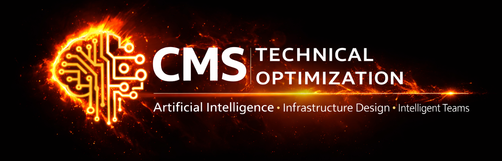

Weekly Update for Signature Law
Team Moment
Don del Mare extends his thanks—and perhaps an offer you can't refuse.
Website Development
- Continued R&D on Sumer's blog integration and long-term legal content SEO strategy.
- Expanded evaluation of Build with AI vs. WordPress architecture as documented in blogseo.html.
- Melissa's profile page now features a rotating client testimonial carousel.
- Jim has begun supplying client testimonial blurbs. Additional testimonials can be added as they become available.
Security & Infrastructure
- Continued monitoring and protection of Signature Law web infrastructure.
- Research continues into emerging infrastructure and AI deployment strategies.
- Security posture remains strong while infrastructure planning continues.
Strategic Brief
Development efforts this week focused on long-term content strategy, AI-assisted publishing workflows, and internal tooling. Research continued into Sumer's legal content integration strategy with an emphasis on creating a scalable publishing system that strengthens search visibility while reducing editorial overhead.
Additional investigation continued into the long-term advantages of AI-generated website architecture versus traditional WordPress deployments, using the concepts documented in blogseo.html as the basis for evaluation.
Development also began on an internal expense tracking prototype. While still in the early stages, the project may evolve into a practical solution for Signature Law should future operational needs warrant it.
CMS Technical Optimization also completed a full systems and infrastructure upgrade, significantly improving development performance, AI workflow throughput, and overall responsiveness.
Hardware Prices Continue to Rise
The rapid expansion of AI infrastructure continues to place pressure on high-performance computer components. Shortages have expanded beyond memory into newer high-speed solid-state drives, resulting in increasing workstation and laptop costs across the industry.
Recommendation: If additional laptops, workstations, or storage upgrades are anticipated later this year, earlier procurement may reduce both cost and availability risks.
Internal Development
An internal expense tracking system prototype is currently under development. Early concepts are focused on simplifying operational expense reporting and creating a flexible platform that could potentially be adapted for Signature Law if desired.
CMS Technical Optimization Infrastructure
A comprehensive systems upgrade has been completed across the CMSTech.ai development environment, improving rendering speed, AI workflow performance, development responsiveness, and infrastructure reliability.
Official engineering assessment: We squid faster now.
Completed
- Sumer legal content SEO research continued.
- AI vs. WordPress architectural evaluation expanded.
- Melissa testimonial carousel implemented.
- Expense tracking prototype initiated.
- CMSTech.ai infrastructure upgrade completed.
Coming Next
- Continue Build with AI vs. WordPress research.
- Advance the expense tracking prototype.
- Continue collecting client testimonials.
- Coordinate Sumer publishing workflow implementation.
- Evaluate future automation opportunities.